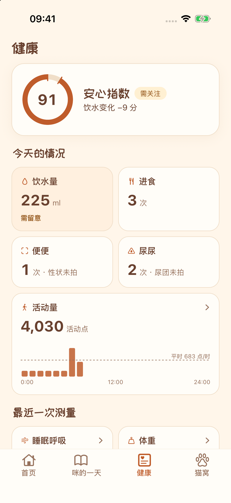
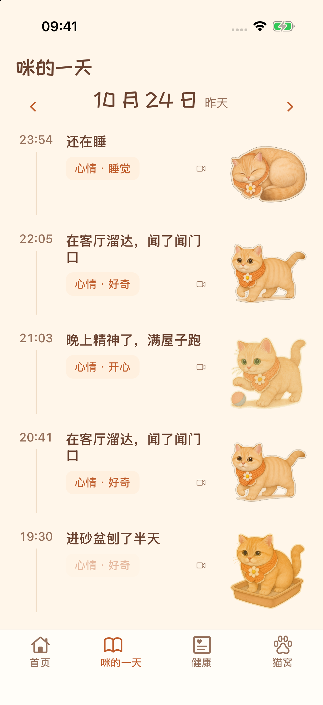
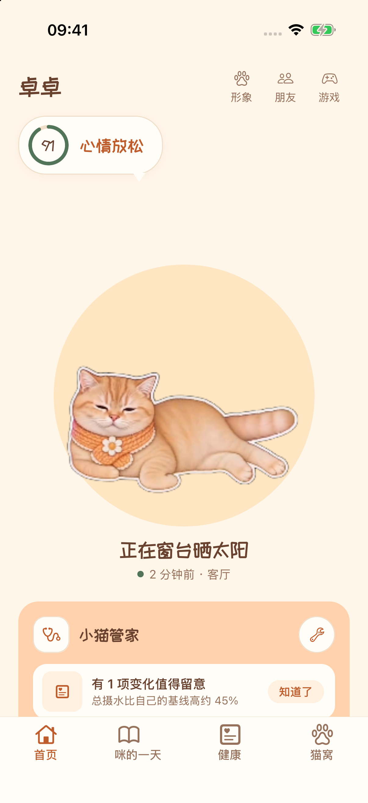
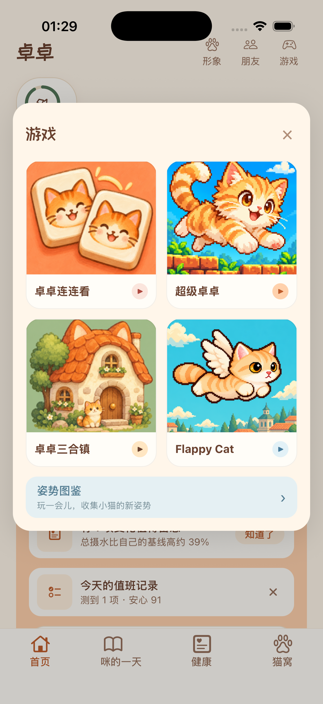

记下吃喝与如厕
记录饮水、饮食和排便排尿，把零散的日常变成可以回看的记录，少一点「好像和平时不一样」的拿不准。
喝水、吃饭、上厕所，都是了解猫咪的线索。
用毛妮留住这些小事，也让熟悉的小猫陪在你身边。
每只猫都有自己的生活习惯。把平时吃了多少、喝了多少、身体有什么变化记下来，才能在需要时回头看看：它最近和平常有什么不一样。毛妮把这些日常放在一起，帮你更了解自家的猫。
记录饮水、饮食和排便排尿，把零散的日常变成可以回看的记录，少一点「好像和平时不一样」的拿不准。
记录体重、呼吸和其他健康情况，也把驱虫、呕吐等需要记住的事留好，照顾猫咪时有迹可循。
回看一段时间的变化，把日常记录整理成兽医报告，让就诊时的描述多一些依据，少一些遗漏。
毛妮项圈上的小传感器记录猫咪的活动量。接入 App 后，可以查看每小时的活动变化，了解它什么时候爱动、最近是不是比平时安静。
没有项圈也能使用 App 记录日常。想要项圈，可以在 App「猫窝 → 项圈」登记。
支持安装「毛妮摄像头」的旧手机或 iPad，也能成为家里的猫咪摄像头。连接 App 后，把镜头前看到的吃饭、喝水、睡觉等日常，记进小猫日记。
在 App「猫窝 → 摄像头」选择「添加摄像头」，扫码配对。
健康记录用于日常观察和就诊参考，不代替兽医诊断。




截图为示例记录，供了解功能。
从今天开始，记下它的日常
下载后按手机提示安装。已安装的用户也可以在 App 内获取更新。
暂不可下载毛妮电脑桌宠
工作时，桌面角落也能有一只小猫。它会睡觉、洗脸、伸懒腰，偶尔溜达几步。连接毛妮 App 后，还能换上你为它选好的形象和配饰。
按住小猫就能拖到喜欢的位置，单击或右键打开动作菜单。忙起来时可以隐藏，想安静一点也有安静模式。
连接 App 后同步小猫形象、配饰和衣柜。也可以在桌宠的「换衣服」里挑选已有穿搭，同步回手机。
开启久坐提醒，小猫会按你设置的间隔提醒你起身活动。提醒间隔可以调整，也可以随时关闭。
选择你的电脑平台
解压后把 MaoniPet.app 拖入「应用程序」。
首次打开可能遇到 macOS 安全提示。如无法打开，请参照 Apple 官方说明了解原因和处理方式。
暂不可下载下载安装包后双击，按安装向导完成操作。
暂不可下载